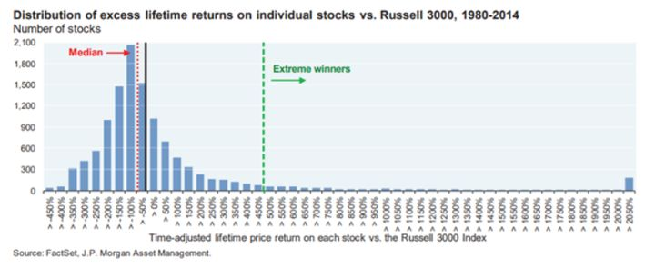
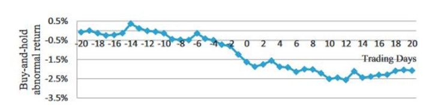
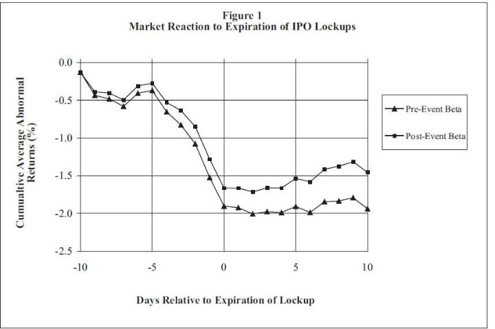
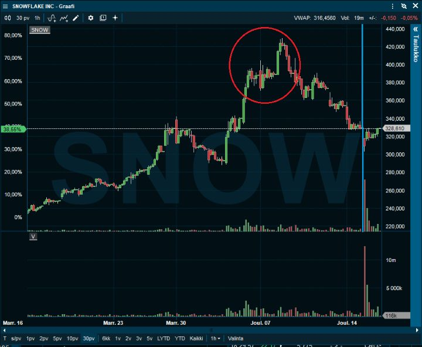

Lyhyeksimyynti — osakemarkkinoiden pimeä puoli
Lyhyeksimyynti eli shorttaus tarjoaa sijoittajille mahdollisuuden hyötyä myös osakekurssien laskusta. Huolimatta pörssin hiprakkaisesta tunnelmasta, ihmiset kyselevät siitä säännöllisesti. Jos aliarvostetuista osakkeista voi hyötyä, miksi ei yrittää samaa yliarvostetuissa osakkeissa?
Joskus on helpompi havaita yhtiöitä, jotka eivät tule pärjäämään kuin valita voittajat. Warren Buffettia mukaillen: Vuonna 1905 olisi ollut järkevämpää shortata hevosyhtiöitä kuin sijoittaa autoyhtiöihin. Parista tuhannesta autoyhtiöistä vain kourallinen menestyi, kun taas hevosbisnes joutui varmasti ongelmiin.
Toisaalta shorttaus on jotain, millä suurimman osan ihmisitä ei kannattaisi vaivata päätään. Osakkeiden omistaminen on lopulta varmin tapa vaurastua, ei niiden myyminen. Lyhyeksimyyjä ei ainoastaan taistele osakkeiden tuotto-odotusta vastaan, vaan hankkii myös melko varmasti harmaita hiuksia. Lisäksi lyhyeksimyynnistä pitää osakkeiden lainaajalle vielä maksaa korvausta. Jos haluaa myydä osakkeita, joita ei omista, ne pitää lainata ensin joltakin toiselta. Kaiken kukkuraksi, osinkojen saamisen sijaan lyhyeksimyyjä joutuu maksamaan sijaisosinkoa osakkeiden lainaajalle.
Kun Warren Buffett mainittiin, on myös hyvä tuoda esiin, miksi hän ja Charlie Munger eivät ole myyneet osakkeita lyhyeksi alkuaikojen jälkeen. Videon viestin voisi tiivistää omin sanoin näin: Se on vaikea bisnes. Tappiot ovat rajattomat ja yliarvostetut osakkeet tuppaavat muuttumaan enemmän yliarvostetuiksi. Lyhyeksimyyminen on tuskallista ja on yksinkertaisesti helpompaa tehdä rahaa ostamalla osakkeita.
Jos Omahan Oraakkeli pitää jotain liian vaikeana, on hyvä ajatella kahteen kertaan, miksi itse sen taitaisi.
Joten tarvitsee olla luonteeltaan jossain määrin vastarannan kiiski myydäkseen osakkeita lyhyeksi vuosi toisensa jälkeen.
Usein lyhyeksimyyjät nähdään vähän epäilyttävässä valossa. Toki markkinoilla liikkuu molempiin suuntiin myös kaikenlaisia kieroilijoita, mutta yleisesti ottaen lyhyeksimyynnillä on merkittäviä hyötyjäkin:
- Huijaukset ja petokset pörssiyhtiöissä paljastuvat usein samaa kaavaa noudattaen. Osakemarkkinoita valvoja viranomainen ei saisi huijaria kiinni edes vahingossa ilman lyhyeksimyyjien ja toimittajien tarjottimella tarjoiltuja todisteita. Esimerkiksi Enronissa ja Wirecardissa on toistunut sama kaava, jossa ensin lyhyksimyyjät havaitsevat ongelman, ja sitten toimittajat penkovat lisää ja tuovat asian suuren yleisön tietoon. Vasta kun ongelma on täysin päivänselvä, viranomainen viheltää pilliin.
- Hyvin toimivalla markkinalla hinnat pysyvät järkevällä tasolla. Ilman lyhyeksimyyjiä tapahtuisi suurempia ylilyöntejä yksittäisten osakkeiden hintojen nousussa kohtuuttomalle tasolle.
- Jotta lyhyeksimyyjät olisivat voitollisia, heidän täytyy myydä korkealta ja ostaa alhaalta. Tällöin järkevä lyhyeksimyynti tasaa kurssivaihteiluita. Shorttaajat ovat paniikeissa innokkaita ostajia ja euforiassa halukkaita myyjiä.
- Joskus kritiikki lyhyeksimyyjiä kohtaan on ihan paikallaan. Perättömät tiedot ja manipulointi eivät edistä markkinan toimintaa. Mutta se nyt on lähtökohtaisestikin kiellettyä. Usein yritetty lyhyeksimyymisen kieltäminen on osoittautunut heikosti toimivaksi liikkeeksi edes kriisitilanteissa.
Meidän sijoitusyhtiömme myy osakkeita, joita ei omista, lähes päivittäin ja pitää pitempiäkin lyhyitä positioita käytännössä jatkuvasti. Sillä on joitain selviä hyötyjä:
- Markkinariskin sääntely. Lyhyeksimyymällä osakkeita voi säätää osakepainoaan ilman, että täytyy myydä hyvänä pitämiään omistuksiaan. Myös toimialariskin neutralisointi onnistuu näin.
- Koska vain pieni vähemmistö sijoittajista katsoo osakkeita hyötyäkseen laskusta, ei ole kovin rohkeaa väittää, että ainakin välillä tulee tilaisuuksia, jossa mahdollista saada selkeä etu.
Joka vuosi on hyvä katsoa tilastoja omasta sijoitustoiminnasta. Muisti tuppaa tekemään virheitä omaa tekemistä arvioidessa. Varsinkin kansainvälisillä välittäjillä on todella hyvät raportit, joissa saa eriteltyä omat tuottonsa juuri haluamallaan tavalla.
Meillä silmiin pisti tänä vuonna yksi yllättävä huomio Yhdysvaltojen markkinoilla: Lyhyeksimyynnit yksittäisissä osakkeissa vastasivat tuotoistamme lähes yhtä suurta osaa kuin yksittäiset osakeomistukset. Tilastoja katsoessa oleellisesti tulokseen vaikuttavista lyhyistä osakepositioista 14 oli voitollisia ja 2 tappiollisia. Voitollisten positioiden tuotto oli 2,2-kertainen tappiollisiin nähden. Lisäksi on hyvä huomioida, ettei meillä ollut kevään romahduksessa tai nousussa oleellisia shortteja.
Vaikka otos on turhan pieni sen suurempien johtopäätösten tekoon, mutta se herättää ajatuksen, pitäisikö lyhyeksimyyntiin keskittyä jopa enemmän. Toisaalta, koska monet lyhyeksi myynneistä noudattavat samoja teemoja tai strategioita, tämä entisestään lisää sattuman todennäköisyyttä syyksi hyvällä putkelle.
Usein kuulee, että lyhyeksimyynnissä tappio on rajaton, mutta voitot rajatut. Tässäkin on hyvä kuitenkin huomioida, että lisäämällä positiota laskevaan kurssiin ja vähentämällä nousevaan, voi tähän yhtälöön itse vaikuttaa. Ja kuten ehkä maailman tunnetuin lyhyeksimyyjä Jim Chanos on sanonut: “Olen nähnyt paljon enemmän osakkeita menevän nollaan kuin äärettömyyteen.”
Indeksituotoista yllättävän suuri osuus selittyy hyvin harvalukuisilla voittajilla. 2/3 osakkeista on pitkällä aikavälillä jäänyt indeksituotosta, ja yllättävän moni osake on pärjännyt surkeasti. Jos jumiutuu shorttaamaan isoa voittajaa, eikä katkaise tappioita, on pulassa. Seuraava graafi kuvaa, kuinka pitkä tuottojakauman oikea häntä on:

Käyn seuraavaksi läpi erityyppisiä strategioita myydä osakkeita lyhyeksi. Koitan havainnollistaa niitä myös esimerkeillä. Rajat ovat hyvin veteen piirretyt, mutta auttavat hahmottamaan asiaa. Strategiat ovat:
- Huijaukset ja vedätykset
- Yliarvostetut osakkeet
- Osakkeet, joissa on odotettavissa jokin negatiivinen tapahtuma
- Osakkeet, joiden näkymät ovat heikentyneet tai tulevat heikentymään
- Osakkeet, joissa on negatiivinen momentum osakekurssissa tai muut tekniset syyt
1. Huijaukset ja vedätykset
Tyyppiesimerkki täysistä huijauksista ovat olleet monet Yhdysvaltojen markkinoille listautuneet kiinalaisyhtiöt. Kun niitä on tutkittu tarkemmin, on saatettu havaita, että heidän ilmoittamat tehtaansa eivät ole toiminnassa tai eivät ole edes olemassa (Katseluvinkki Netflixistä China Hustle).
Tyypillisemmin huijaavat yhtiöt ovat olemassa ja tekevät merkittävää liiketoimintaa, mutta yhtiöt ovat vain liioitelleet kasvu- ja kannattavuuslukujaan. Tällaisia ovat viime vuosina paljastuneet Wirecard (FT:n artikkeli) ja Lucking Coffee (Bloomberg artikkeli), joiden markkina-arvot laskivat yli kymmenestä miljardista eurosta käytännössä nollaan. Kaikkien aikojen suurimpana yrityshuijauksena pidetty Enron vei tilinpäätöslukujen vääristelyn aivan omiin ulottuvuuksiinsa.
Vedätyksestä voidaan puhua, kun yhtiö antaa aivan liian ruusuisia tulevaisuudenkuvia sijoittajille. Suuri läpimurto on aivan oven takana, mutta siihen tarvitaan vielä vähän lisärahoitusta. Tämänkaltaisesta toiminnasta on syytetty muun muassa vety- ja sähkörekkayhtiö Nikolaa tänä vuonna. Yhtiö joutui jopa myöntämään, että se työnsi toimivaksi väitetyn prototyyppinsä alamäkeen saadakseen kuvattua promootiovideon.
Pörssihuuma ja huijaukset kulkevat käsi kädessä. Sen takia tätäkin pörssinousua tullaan jälkikäteen katsomaan vedätysten kultaisena aikana. Kun ihmiset näkevät naapuriensa rikastuvan, he usein heittävät skeptisyytensä romukoppaan, jolloin takaistuja tai liian ruusuisia tarinoita on paljon helpompi myydä.
Muutama vuosi sitten huijauksia ja vedätyksiä oli kannabisteollisuudessa, nyt yritystä tuntuisi olevan energiamullistuksen ympärillä. Turhan moni hädin tuskin prototyypin valmistanut sähköautoyhtiö on hinnoiteltu miljardien arvoiseksi.
Kun miettii position kokoa huijaukseksi katsomassaan yhtiössä, pitää huomioida hyvin tärkeä asia: Jos yritys on näyttänyt liian hyvää tulosta tai vääristellyt tuotteensa hyvyyttä, miksi ihmeessä tilanne muuttuisi juuri nyt? Ja jos nämä on aiemmin uskottu, miksi usko loppuisi nyt?
Esimerkkicase - GSX Techedu
Yhtiö tekee kovassa suosiossa olevaa online-tutorointia Kiinan koululaisille. Se on todellisuudessakin lupaava ala, mutta kilpailu on kovaa. Yhtiössä on kuitenkin niin sanottuja punaisia lippuja liikaa tähän listattavaksi, mutta ehkä muutama pointti on hyvä mainita:
- Yhtiö käyttää lukuisien raporttien mukaan botteja saadakseen käyttäjämääränsä näyttämään todellista suuremmalta.
- Yhtiön liikevaihdon kasvu ei ole linjassa yhtiön näkyvyyteen ja hakukonetrendeihin Kiinassa.
- Yritys kasvoi käsittämättömän nopeasti ja kannattavasti. Kuitenkin sen jälkeen, kun se joutui viranomaisen tutkintaan, yritys teki todella suuren tappion. Aiemmin tätä keinoa on käytetty muissa yhtiöissä peittämään sitä, että yhtiön helposti tarkistettavat kassavarat eivät vastaa tilinpäätöstietoja.
- Yhtiön markkina-arvo on epäilyistä huolimatta 13-kertainen suhteessa liikevaihtoon, mitä voidaan pitää haastavana ilman huijausepäilyjäkin.
Mutta täyttä varmuutta ei ikinä ole. Sijoittajan pitää vain luottaa todennäköisyyksiin. Jos yhtiö jotenkin onnistuisi vakuuttamaan meidät, että kaikki on kunnossa, osake pitää vain ostaa paljon ylempää kiinni. Koska GSX näyttää niin epäilyttävältä, osaketta on shortattu miljardeilla dollareilla. Tästä syystä osakkeen nousut voivat olla rajuja.
Huijausten ja vedätysten shorttaamisessa on massiivinen lisäongelma, josta harva Suomessa tietää. Yhdysvalloissa osakelainojen korot liikkuvat riippuen lainojen kysyntä- ja tarjontatilanteesta. Vaikka osaketta myydessä korko olisi pieni, se voi nousta merkittävästi ajan myötä (toisin kuin osakelainoissa esimerkiksi Pohjoismaissa). Suurten yhtiöiden osakelainakulut ovat yleensä prosentin kymmenyksiä. Sen sijaan hyvin epäilyttävissä yhtiöissä lainakustannus voi nousta yli sataan prosenttiin vuodessa. Silloin ei riitä, että on lopulta oikeassa. Moni Wirecardia shortanneista teki lopulta tappiota, koska yhtiö onnistui pitämään kulisseja yllä vuosikausia lainakustannusten raksuttaessa ja osakkeen noustessa.
2. Yliarvostetut osakkeet
Tämä ehkä vaikuttaa kaikkein luonnollisimmalta syyltä myydä lyhyeksi, mutta se on ehkä kaikkein hankalin. Se kuulostaa järkevältä, mutta kokemus on osoittanut, ettei se tahdo toimia.
Viimeisen vuoden aikana kalliiden yhtiöiden myyminen ja halpojen ostaminen on ollut yksi huonoimmista strategioista. Jossain vaiheessa tämäkin kääntyy, mutta ajoittaminen on tunnetusti äärimmäisen hankalaa.
Yliarvostettua yhtiötä shorttaamiseksi olisi hyvä ainakin toisen seuraavista olla tosi:
- On näköpiirissä jokin syy, miksi yliarvostus purkautuu lähiaikoina.
- Itsellä on jotain tietoa, miksi muiden käsitys yhtiöstä ei vastaa todellisuutta.
Koneen osake on näyttänyt usein kalliilta. Nyt se näyttää kalliimmalta kuin koskaan. Emme kuitenkaan ole osaketta shorttina. Laatuyhtiönä jotkut sijoittajat tuntuvat pitävän sitä jo velkakirjan korvikkeena mutta paremmalla tuotolla. Korkojen nousu tai yhtiön kysynnän hiipuminen voivat muuttaa tätä yhtälöä. Mutta toistaiseksi tätä ei ole näköpiirissä. Toisaalta jos osake nousisi vielä selkeästi, voisimme harkita sen myymistä, ja samalla ostaa Koneen kilpailija Otiksen osaketta vastapunnukseksi salkkuun.
Usein alat menevät yliarvostukseen ryhmänä. Sijoittajat puhuvat usein hypestä. Suurimman osa ajasta jokin yksittäinen ala on niin kuuma, että siihen koskemalla voi polttaa näppinsä. Hype perustuu usein todelliseen ideaan, joka tuo alalle hyviä kasvunäkymiä. Tyypillistä hypelle on kuitenkin, että innostus nousee tasolle, jolla mikään hinta osakkeesta ei ole liian korkea. Sille on myös tyypillistä, että vuorovesi nostaa huonotkin yhtiöt hyvien rinnalle.
Tällä hetkellä tulikuumia aloja ovat muun muassa sähkökulkuneuvot, energiamurros, vetyteknologia ja rokotevalmistajat. Olemme olleet kaikkia näitä sektoreita menestyksekkäästi shorttina, mutta usein on tärkeää odottaa täysin paraboolista liikettä ylöspäin tai negatiivista katalyyttiä. Silti tällaisten osakkeiden myyminen on riskiä, jolloin positiokoko on hyvä pitää maltillisena. Jotkin näistä yhtiöistä toki tulevat olemaan hyviä sijoituksia (Kuten Amazon oli vuonna 1999), mutta korkeat arvostustasot tuovat markkinoille myös opportunisteja, joiden päätarkoitus on vain rahastaa sijoittajia.
3. Osakkeet, joissa on odotettavissa jokin negatiivinen tapahtuma
- Odotuksista poikkeavan tuloksen tai muun tapahtuman ennakointi. Valtaosassa yrityksistä ja suurimman osan ajasta on lähes mahdotonta saada etu yhtiön seuraavan tuloksen arvioinnista. Vaikka löytäisi heikkouksia analyytikoiden ennusteista, yhtiötä seuraavilla sijoittajilla ja rahastoilla voi olla parempi kuva tuloksesta. Suurissa yhtiöissäkin voi kuitenkin joskus tunnistaa tilanteita, joissa kaikki sijoittajat tuntuvat olevan samalla puolella venettä. Tällöin esimerkiksi kaikkien odotusten ylittäminenkin voi johtaa osakekurssin laskuun. Näitä tilanteita usein edeltää voimakas kurssinousu. Pienemmissä yhtiöissä edun saaminen voi olla helpompaa. Suomalaisen keskisuuren yhtiön tuloksen arviointiin ei laiteta samalaisia resursseja kuin seuraavan iPhonen myyntilukujen ennakointiin, joten tutkimuksella voi olla paljonkin arvoa. Hyvä pitää mielessä, että jos joku asia on melko ilmeinen, et luultavasti ole ainoa sijoittaja, joka asian on huomannut.
- Kirjanpidolliset erikoisuudet. Kun yrityksen myyntisaatavat tai varasto kasvavat, on hyvä selvittää syy siihen. Läpilaskutus, poistot ja tuotekehitysmenojen aktivointi on hyvä katsoa tarkemmin. Kirjaako yritys liikevaihtoa optimistisesti vai varovaisesti verrattuna alan standardeihin. Kohteleeko yritys toistuvia menoja vuosi toisensa jälkeen kertaluonteisia? Näitä on hyvä katsoa myös harkitessa osakkeen ostoa. Joskus sieltä voi löytyä lyhyemmänkin ajan mahdollinen katalyytti.
- Lockupin umpeutumiset. Monet yhtiö nousevat osittain sen ansiosta, että markkinoilla on hyvin vähän osakkeita vapaan kaupankäynnin kohteena. Usein tämä ongelma ratkeaa, sisäpiirin myydessä osakkeita. Usein listautumisannin jälkeen kestää puoli vuotta, että on lupa myydä. Vaikka tutkimukset usein näyttävät keskimäärin vain prosentin tai parin negatiivista tuottoa lockuppien umpeutuessa, uskomme että oikeilla yhtiövalinnoilla tuloksia voi parantaa hyvin merkittävästi. Usein tutkimusten tuottograafit näyttävät seuraavan kaltaisilta nollan ollessa lockupin umpeutuminen:


Shorttaamalla esimerkiksi todella rajusti nousseita osakkeita tai epäilyttäviä yhtiöitä, voisi olettaa kurssilaskun olevan keskiarvoa suurempia. Jos yhtiön valuaatio on 10-kertaistunut vuodessa, voisi olettaa sisäpiirin olevan halukkaampia myymään kuin jos arvostus on säilynyt ennallaan. Yleensäkin omistajalistan tarkastelu kannattaa.
Markkinat tehostuvat jatkuvasti, ja oletuksemme on, että monessa asiassa kannattaa yrittää olla korostetun ajoissa. Tuotto/riskimielessä reilu viikko ennen lockupin umpeutumista tuntuu parhaalta ajalta olla osaketta shorttina. Monet pörssin uusita osakkeista ovat hyvin volatiileja, joten aikaikkunan pitäminen lyhyenä jättää ehkä pienen osan odotetusta tuotosta pöydälle, mutta toisaalta vielä suuremman osan volatiliteetista. Muutkin sijoittajat ennakoivat sisäpiiriläisten myyntejä myymällä etukäteen osakkeita.
Esimerkkicase – Snowflake 4–15.12.2020
Snowflake nosti pääomaa kuluvan vuoden helmikuussa 12,4 miljardin dollarin arvostuksella. Syyskuun listautumisannissa arvon piti olla ensin luokkaa 20 miljardia dollaria, mutta sitä nostettiin kovan kysynnän takia yli 30 miljardiin dollariin. Kolme kuukautta myöhemmin pörssissä maksettiin osakkeesta jo 120 miljardin arvoa vastaavaa hintaa.
Yksi Snowflaken ongelmista on lisäksi aivan poikkeuksellisen runsaskätinen optio-ohjelma. Huippukurssilla pelkästään yhtiön toimitusjohtajan palkitsemispaketin arvo oli 108 miljoonaa dollaria. Ei vuodessa, vaan joka ainut kuukausi. Aika hyvin yhtiössä, jonka liikevaihto jää tänä vuonna alle 600 miljoonan dollarin. Muutkin yhtiön työntekijät saavat todella runsaasti optioita, joten vuosien päästä markkina-arvoon täytyy lisätä parikymmentä miljardia dollaria uusien osakkeiden takia.
Tästä huolimatta myimme viime viikoilla Snowflakea ennen kaikkea, koska hurjalle nousun loppumiselle oli syy: Sisäpiiriläiset saisivat myydä osakkeita 15.12.
Koska tilastollisesti mehukkain tuotto tulee reilu viikko ennen sisäpiirin myyntejä, aloitimme myydä osaketta lyhyeksi jo 4.12. osakkeen vielä kohotessa lähes pystysuoraan. Myyntialue ympyröity ja sininen viiva lockupin umpeutuminen:

Seitsemässä kaupankäyntipäivässä osake tuli 28 % alas. Heti sisäpiirin saadessa myyntiluvan, osakkeen vaihto nousi valtavan suureksi. Emme tietenkään saaneet koko liikettä, mutta puoletkin reilussa viikossa on enemmän kuin hyvä tuotto.
Uskomme, että Snowflake on todennäköisesti yliarvostettu. 150-kertainen markkina-arvo suhteessa liikevaihtoon on yli 100 miljardin arvoiselle yhtiölle ennennäkemätöntä. Ostimme osakkeen kuitenkin heti kun odottamamme tapahtuma oli ohitse.
Yritys ja tuote ovat huippuluokkaa. Jos shorttaisimme sitä pelkästään valuaation takia, sen pitäisi olla täysin naurettava. Ehkä se on jo nyt, ehkä ei. Amazonit, Netflixit ja Teslat ovat osoittaneet, että kalliin näköinen yhtiö voi olla kammottava shortti. Etenkin, kun olemme markkinassa, jossa arvostuksista ei olla kovin tarkkoja.
On hyvä muistaa, etteivät osakkeet usein käyttäydy kuten odotetaan. Jokaista hyvin toiminutta tapausta kohtaan tuppaa olemaan pari heikompaa. Riittää, kun keskiarvo on riittävän hyvä.
Joskus käy vielä parempi tuuri. Olimme reilusti Nikolaa shorttina marraskuun lopussa, koska yritys vaikutti yliarvostetulta, lockupin umpeutuminen lähestyi ja monet yhtiön lupaukset vaikuttivat utopistisilta. Osakekurssin 50 % lasku muutamassa viikossa sattui juuri lockup-viikolle huonojen uutisten ajoittuessa samalle viikolle.
4. Osakkeet, joiden näkymät ovat heikentyneet tai tulevat heikentymään.
Palavalla lautalla olevia yrityksiä on helppo löytää historiasta, mutta reaaliajassa ne eivät aina ole yhtä ilmeisiä. Blockbuster kiihdytti videovuokraamoliikkeiden avaamista vielä 2000-luvulla Netflixin jo tuodessa suoratoistopalveluaan markkinoille. Kodak luotti ihmisten haluavan ottaa kuvia tulevaisuudessa myös filmikameralla. Nokiassa naureskeltiin iPhonen ”ylihintaista” kosketuspuhelinta. Yritykset olivat jo matkalla alas, vaikkei niiden johto sitä vielä ymmärtänyt.
Tällä hetkellä esimerkiksi öljy-yhtiöt ovat palavalla lautalla, mutta toisaalta ne on hinnoiteltukin vain seuraavan reilun kymmenen vuoden tulokseen perustuen. Jotkin polttomoottoriautojen valmistajista tulevat jäämään kelkasta siirryttäessä sähköautoihin. Tupakkayhtiötkin ovat hinnoiteltu ankean tulevaisuuden alaksi. Jopa pankkien tulevaisuutta kyseenalaistetaan.
Kuitenkin tuottoihin lyhyeksimyytäessä vaaditaan, että löytää yhtiöitä, joiden tulevaisuus on merkittävästi muiden odotusta heikompi.
Olin väärässä myydessäni Nesteeni suunnilleen nykyisellä hinnalla, mutta ennen 1:3 splittiä. Väärässä olosta oppineena, olen vähän varovainen myymään osaketta lyhyeksi. Silti en voi olla miettimättä, että jos siirrymme vauhdilla vety- ja sähkötalouteen muutamassa vuosikymmenessä, niin kuinka korkealle yhtiö oikein halutaan arvostaa? Kuitenkin perinteiset jalostamot ovat pikkuhiljaa myös lisäämässä kilpailua merkittävästi uusiutuvissa polttoaineissa. Toki seuraavan 5–10 vuoden näkymät ovat hyvin valoisat, ja lentoliikenne varmasti tarvitsee polttoainetta siipiin vielä hyvin pitkään.
Esimerkkicase – Beyond Meat
Tykkään Beyond Meatin hampurilaispihveistä. Ne eivät ole terveellisiä, mutta ne maistuvat suhteellisen hyviltä lihankorviketuotteiksi. Silti olemme osaketta shorttina.
- Yritys hinnoitellaan 20-kertaa liikevaihdon verran. Tämä ei kuitenkaan ole mitään softabisnestä, missä liikevoittomarginaali voisi olla paljon kymmentä prosenttia korkeampi.
- Kilpailu on kiristynyt merkittävästi uusien toimijoiden ja perinteisten lihanvalmistajien tuodessa keinoliha-tuotteitansa markkinoille. Tuotteelle on vaikea luoda vallihautaa ja lihabisnes on ollut perinteisesti todella kilpailtu ala.
- Treidin vastapuolella on paljon yksityissijoittajia, jotka myös tykkäävät tuotteesta. Omassa kuplassaan näkee, kuinka hyvin tuote liikkuu kaupoissa ja se sitä löytyy ravintoloista. Kuitenkin ketjuravintoloiden keinoliha-kokeilut ovat olleet pääasiassa pettymyksiä, ja hipsteriasuinalueiden ulkopuolella keinoliha tuskin saavuttaa sen suurempaa suosiota kuin luomutuotteet, joiden menekin vähyyttä on vaikea uskoa omasta kuplastani käsin.
- Mikä tärkeintä, Beyond Meatin kasvu on lähes pysähtynyt alkuperäisillä tuotteilla mitattuna. Koko ajan pitää tuoda uusia tuotteita, jotta ylipäätänsä kasvetaan. Itseasiassa kolmannella neljänneksellä koko yhtiön liikevaihdon kasvu pysähtyi kokonaan verrattuna edelliseen neljännekseen ja se oli vain +2,7 % vuodentakaiseen nähden (johto kyllä vetosi toimitusten ajoituksiin). Vertailun vuoksi kasvu oli vuosi aiemmin vielä 250 %. Kasvu tulee pitkälti jatkossa kansainvälistymisessä. Kuitenkin markkina-arvo edellyttäisi liikevaihdon kymmenkertaistumista vielä tulevaisuudessa. Aiemmin kasvuluvut ovat olleet hurjia, mutta on helpompi kasvaa satoja prosentteja kymmenistä kuin sadoista miljoonista dollareista. Jos yhtiön kasvu laskee vuositasolla muutamiin kymmeniin prosenttiin (mihin nykyinen trendi viittaa), osakkeella on edessään kovat ajat. On yksinkertaisesti helpompi nähdä pettymys kuin odotusten ylitys.
5. Osakkeet, joissa on negatiivinen momentum osakekurssissa tai muut tekniset syyt
En ole teknisen analyysin asiantuntija, mutta esimerkiksi suurin osa lyhyeksimyyntiin keskittyvästä kirjallisuudesta keskittyy tekniseen analyysiin (Itse omistan vain Elder: Sell and sell short). Uskon, että teknisestä analyysistä on hyötyä, muttei se ole niin helppoa kuin ihmiset usein sen kokevat.
Itse huomioin teknisiä tekijöitä ainakin näin:
- Jos osake on selkeässä nousutrendissä, on hyvä olla shorttaamisessa mieluummin myöhässä kuin ajoissa. Tai sitten odottaa suoranaista ostopaniikkia, jossa hinnalla ei tunnu olevan enää mitään väliä. Euforiaan myyminen toimii usein samoin kuin myyntipaniikkiin ostaminen.
- Kun osake menettää momentumin, on hyvä osaketta myydä lisää. Etenkin kun taustalla on negatiivisia tapahtumia tai uutisia, se vahvistaa, etteivät nämä olleet täysin odotettuja.
- Teen hyvin harvoin mitään päätöksiä pelkästään tuki- tai vastustasojen perusteella, mutta niiden jättäminen kokonaan huomiotta ei sekään tunnu kovin hyvältä ajatukselta.
Lopuksi
Lopuksi haluaisin vielä korostaa uudestaan, että lyhyeksimyynti on joskus hermoja riipivää, ja on melko harvoille sopiva harrastus. Osakkeita omistamalla vaurastuu helpommin ja riskittömämmin.
Kieltämättä muutamilla aloilla monet osakkeet tuntuvat olevan kuplassa tai kuplan rajamailla. Kuitenkin jopa alan parhaimpien taitajien ongelmat lyhyeksimyynnissä näyttävät, kuinka petollisen vaarallista edes karkeasti yliarvostettujen yritysten shorttaaminen on. Jos tätä haluaa yrittää, pitää mielessä pitää nöyryys ja hyvä riskienhallinta. Siitä ei ole haittaa muutenkaan sijoittamisessa, mutta osakkeita ostaessa saa paljon enemmän anteeksi.
Disclaimer:
Kolumnit sisältävät mielipiteitä ja mahdollisesti tietoa omista sijoituksistamme, jotka voivat vaihdella päivästä toiseen. Mitään, mitä kirjoitamme ei tule ottaa sijoitussuosituksena. Kuten teksteissämme painotamme, päätökset kannattaa aina tehdä itse. Lukija vastaa itse voitoistaan ja tappioistaan.